I loved basketball. Then, in my last year of high school, I badly injured my ankle. This is probably the main reason I never made it to the NBA. (I am joking.) I have played far less since. To be fair, becoming lazy at university also played a part.
PhD student · University of St Andrews
Hello, I’m Jim.
I build mathematical and computational models of cancer: how a tumour grows, how it spreads to other organs, and how it responds to therapy.
- Mathematical Oncology
- Computational Biology
- Ecosystems and Dynamical Systems
- AI for Biology and Mathematics
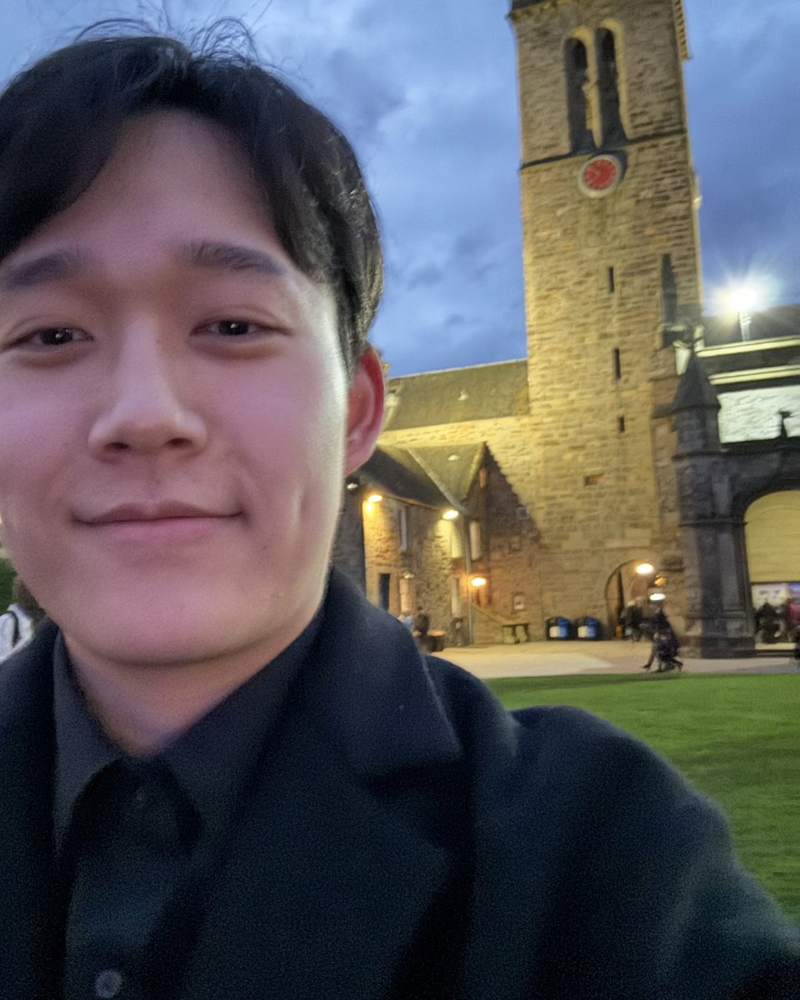
Background
- 2023 — nowUniversity of St AndrewsMaster’s, then PhD. Supervised by Dr Nikolaos Sfakianakis and Prof. Mark Chaplain.
- 2019 — 2023University of NottinghamUndergraduate studies in Mathematics and Applied Mathematics.
- EarlierJiujiang No. 1 High SchoolJiangxi, China.
Projects
What I work on.
Projects, past and present. Most are about cancer. A few are not.
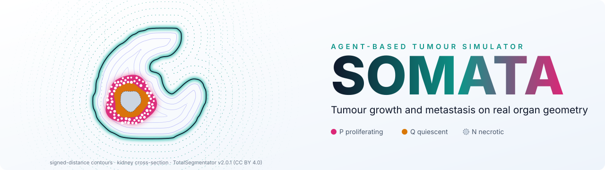
Flagship · Open sourceSOMATATumours growing inside real organs, cell by cell.
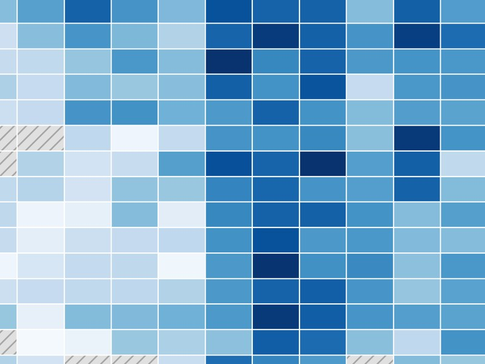
Mathematical modelWhere metastases landWhy each cancer prefers certain organs.
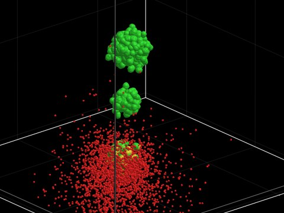
TherapyCancer-killing virusesWhy virus therapy can stall at a tumour’s dead core.
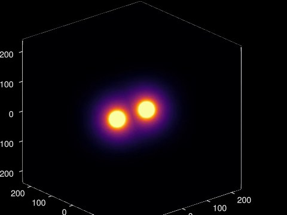
Therapy · PrototypeHeating a tumour from the insideThermal therapy, simulated cell by cell.
Mathematical biologyAdvance or retreatWhen an infection turns expansion into retreat.
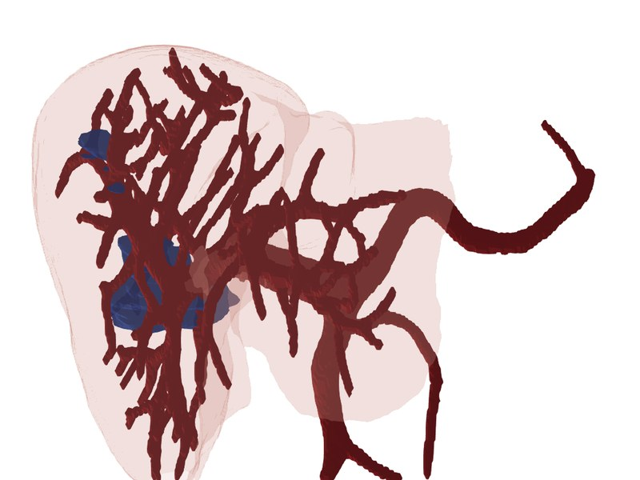
Medical imagingVessels and liver metastasesDo blood vessels decide where metastases grow?
AI for mathematicsFrom equations to meshesCan a language model read an equation like an expert?
AI memoryTime is not a labelA memory for AI agents that knows which facts expire.
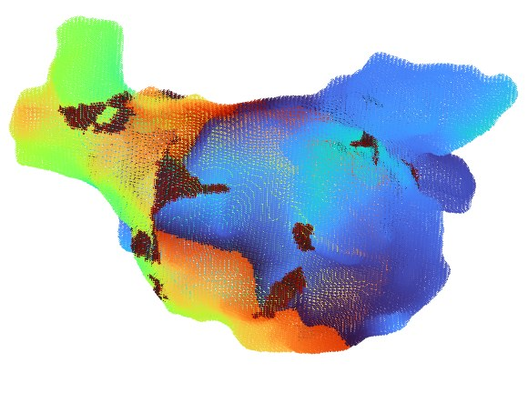
Cardiac modellingA virtual atriumElectrical waves in a model of the heart.
Agent-based modelling · Open source
SOMATA
Tumours growing inside real organs.
The idea
Most cell-level tumour models grow their tumour in a box. A real tumour grows inside an organ, and the shape of that organ decides where the tumour can go.
SOMATA — Spatial Organ-resolved Metastasis with Agents on Three-dimensional Anatomy — follows a tumour cell by cell, from its first divisions to its spread to other organs, on real anatomy. Every cancer cell is one agent. It grows, divides, pushes its neighbours, moves and dies in three dimensions.
How it works
1 · Geometry
An organ segmented from CT, MRI or a surface mesh becomes a signed-distance field: a map that tells every point how far it is from the organ surface. Cells cannot cross that surface. The library covers 16 primary sites and 20 secondary sites, most of them with a real shape.
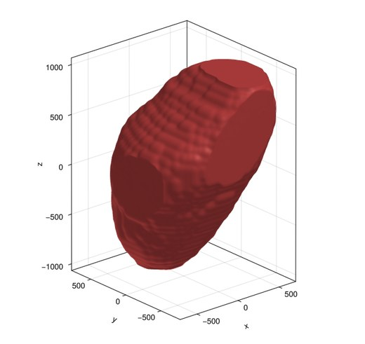
Kidney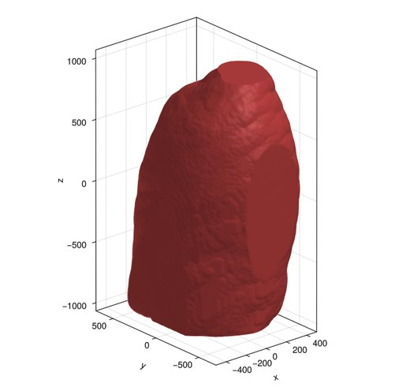
Lung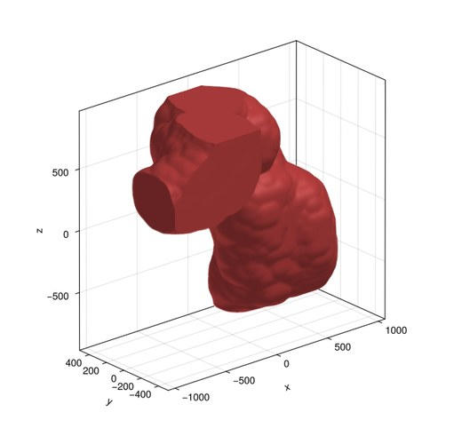
Pancreas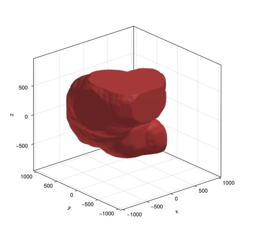
Stomach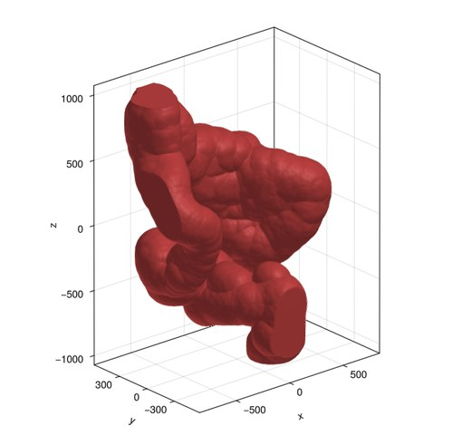
Colon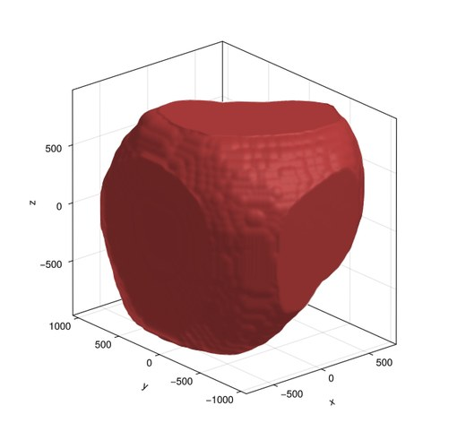
Spleen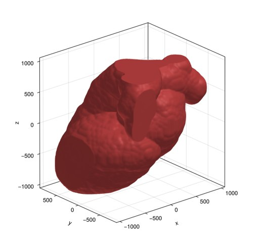
Heart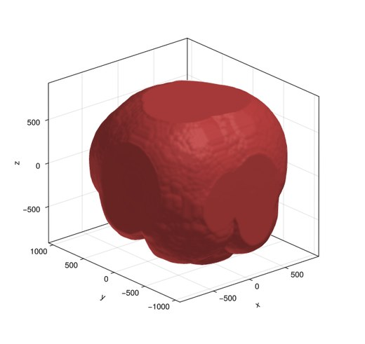
Brain2 · Cells and nutrient
Cells consume a nutrient that enters at the tumour surface. Deep inside, the supply runs out. Cells there starve, die, and form a necrotic core.
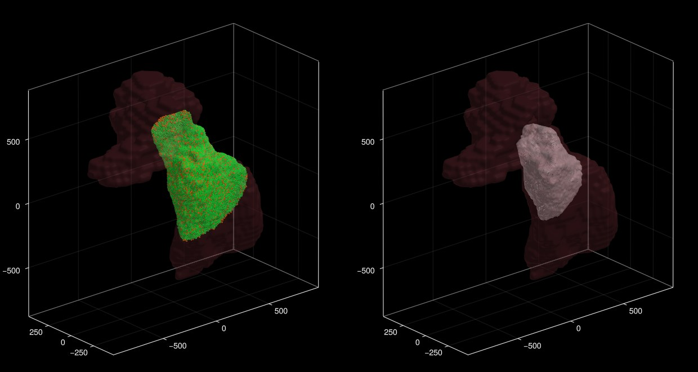
3 · Layers
Between the dividing rim and the dead core lies a band of quiescent cells: alive, but no longer dividing. SOMATA resolves all three layers.
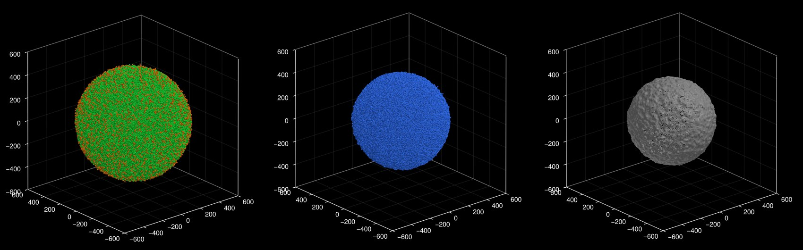
4 · Spread
Some cells leave the primary tumour and travel to other organs. Where a few of them survive and settle, a secondary tumour begins.
Open source
SOMATA is being released in stages. The first stage, the geometry toolkit, is public. Much of the rest is already built and tested, and will be uploaded step by step.
Where it is going
One reproducible, open pipeline: from a medical image, to a tumour growing in that anatomy, to virtual tests of therapy.
Mathematical model
Where metastases land
Why each cancer prefers certain organs.
The question
Cancers do not spread at random. Each type has organs it reaches often and organs it rarely touches. The pattern has been known for more than a century. We ask whether a small mechanistic model can reproduce it.
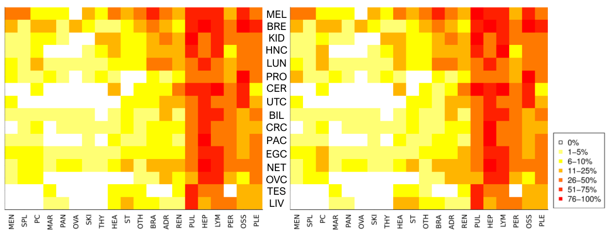
The model
The model has three parts. A primary tumour grows, and some of its cells become mobile. Those cells are shed at random to twenty possible sites. At each site, a new colony survives only if it passes a critical size.
One number for each cancer–site pair, an affinity weight, sets how welcoming the site is. We calibrate the weights against a published autopsy cohort.
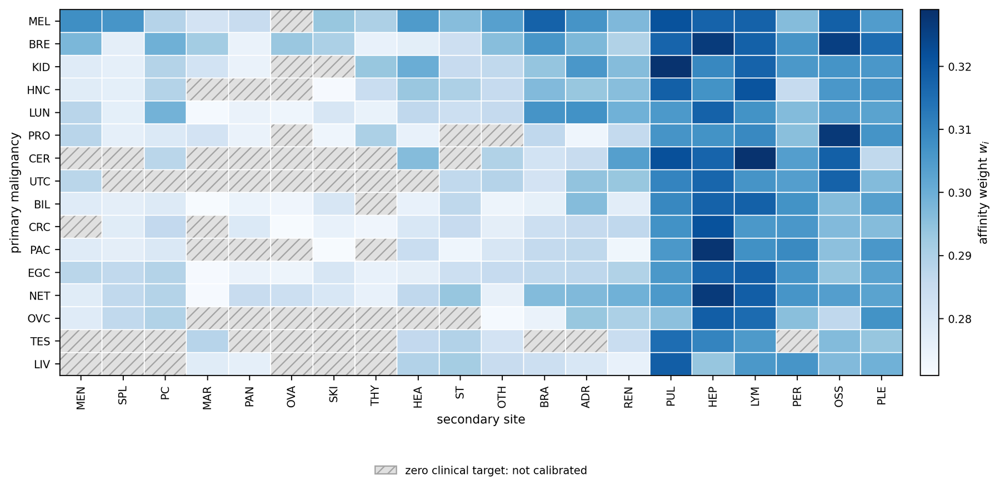
What it shows
The calibrated model reproduces the pattern for all sixteen cancers. It also explains why the pattern is so sharp. Because a colony must pass a threshold to survive, a small difference in affinity becomes a large difference in how often metastases appear.
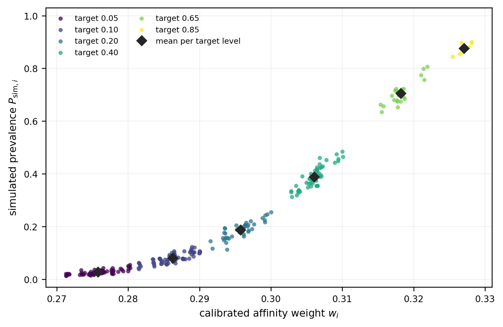
Joint work with collaborators. The model is calibrated to reproduce observed patterns; it is not a predictor for individual patients.
Agent-based modelling
Cancer-killing viruses, cell by cell
Why virus therapy can stall, and what a tumour’s dead core has to do with it.
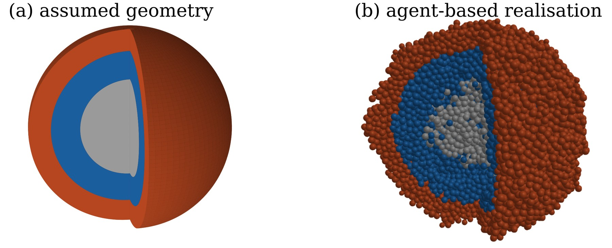
The question
Oncolytic viruses infect cancer cells, multiply inside them, and burst them open. In principle the infection should sweep through a tumour. In practice it often stops short. Why?
The model
We simulate every cancer cell and every virus particle in three dimensions. Cells grow, divide and compete for nutrient. Virus particles drift, infect the cells they touch, and are released again when those cells burst. Later versions add immune cells.
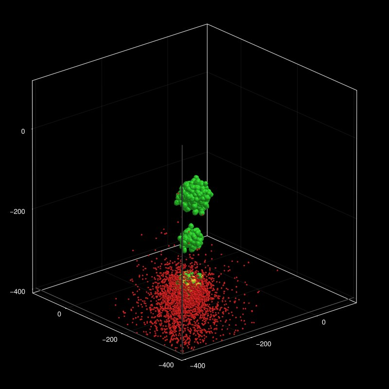
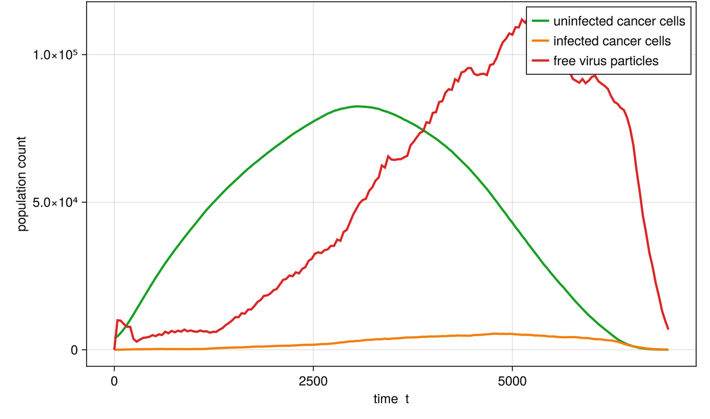
What it shows
A large tumour carries a core of dead material. If nothing clears that material, the tumour cannot shrink below it: the dead core sets a floor. Small tumours without a core are usually cleared. Large ones are not, unless the debris is removed fast enough.
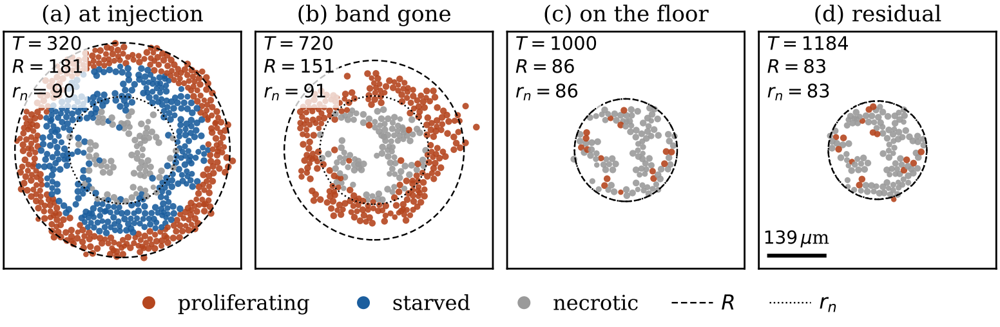
Agent-based modelling · Prototype
Heating a tumour from the inside
Thermal therapy, simulated cell by cell.
The question
Thermal ablation destroys tumour tissue with heat delivered through thin probes. Whether it works depends on where the heat reaches, and on what the surviving cells do next.
The model
A heat equation is coupled to the individual-cell tumour model. Probe tips warm the tissue around them. A cell that stays too hot for too long dies. Dead cells form a solid region that living cells cannot enter.
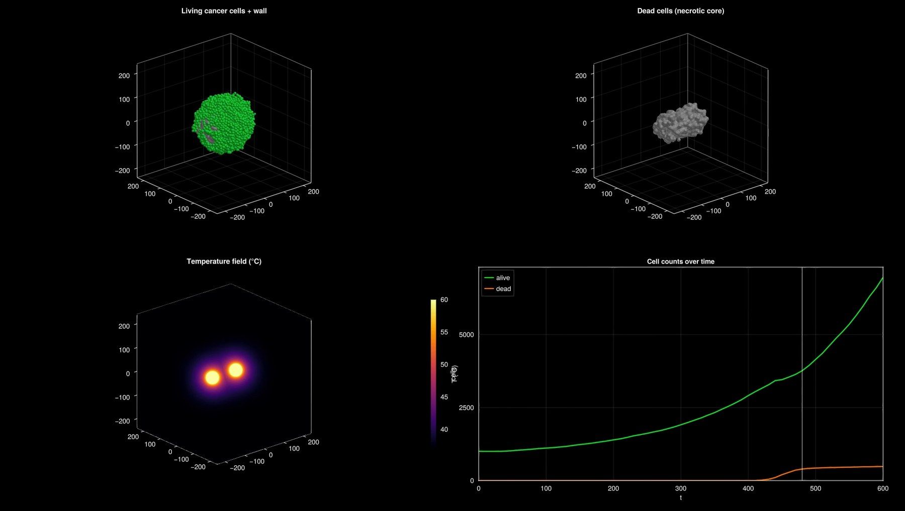
Where it stands
This is an early prototype. In the first runs, two probes create two dead zones, while the cells outside them keep dividing. That is exactly the question the model is built to ask: how many probes, where, and for how long?
Mathematical biology
When infection turns expansion into retreat
A population spreads. A disease spreads inside it. Which one wins at the edge?
The question
A population expands into new territory while an infection spreads through it from behind. Can the infection stop the expansion, or even reverse it?
The model
We study a reaction–diffusion model in which individuals are either susceptible or infected, and recover back to susceptible. The population needs a minimum density to grow, and the edge of its range is free to move.
What it shows
When the infection reaches the edge, the edge can turn around: advance becomes retreat. And the outcome is not fixed by the parameters alone. Where the infection starts can decide between the two.
Joint work with collaborators at the University of Nottingham.
Medical image analysis
Do blood vessels decide where liver metastases grow?
Testing the simplest explanation first.
The question
Metastases in the liver are found more often on its right side. The usual explanation is blood flow. But the right side is also simply larger. The flow idea had not been tested against each patient’s own liver volumes.
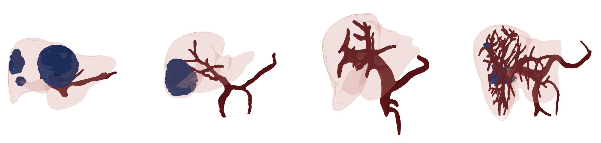
The method
From 61 public CT studies we extract the portal vein tree and divide each liver into the territories that each branch supplies. Then we ask whether the positions of the lesions depend on the tree beyond what tissue volume already explains.
Every test is first run on a synthetic tree with a known answer, to learn what it can and cannot detect.
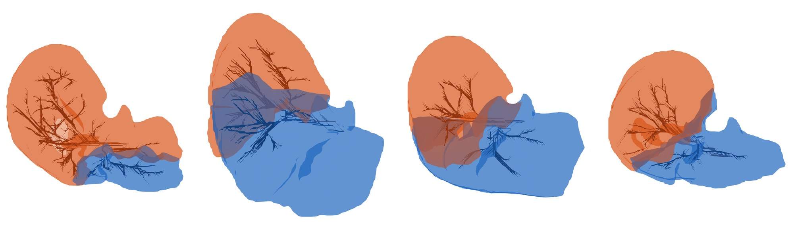
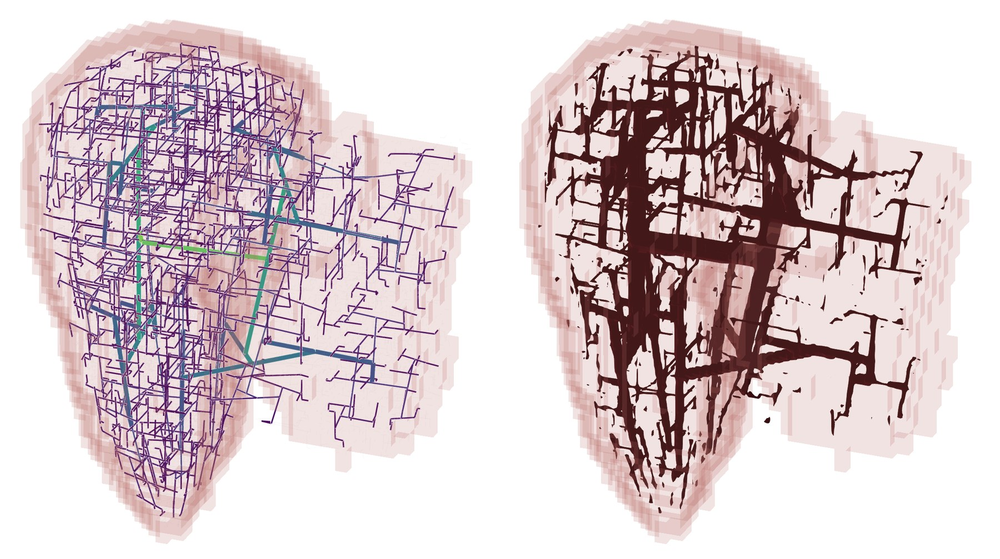
What it shows
We found no detectable effect of tree geometry beyond tissue volume, within the measured sensitivity of the tests. A larger territory holds more lesions. So far, that is enough.
Images on this page are derived from public, anonymised data (Medical Segmentation Decathlon, hepatic vessel task) and are shared under CC BY-SA 4.0.
AI for mathematics · In design
From equations to meshes
Can a language model read a differential equation the way an expert does?
The question
To solve a differential equation on a computer you need a mesh. A good mesh is fine where the solution changes sharply and coarse everywhere else. Finding those places in advance takes an expert, a pencil, and a scale analysis.
The idea
We ask a large language model to do the scale analysis. It reads the problem as plain text and states where the sharp features are, how thin they are, and when that statement holds. The model never draws the mesh. Its statement is checked by symbolic code, and audited rules turn it into mesh sizes.
- ProblemEquation, data and tolerance, as plain text.
- Scale analysisThe language model. The only AI step.
- Feature cardWhere it is sharp, how thin, when valid.
- AuditSymbolic checks of every claim.
- Sizing rulesOne rule per feature, then combined.
- MeshFine only where it is needed.
Where it stands
The pipeline is designed and the parts without AI are built. We are now testing the central question: on which problems does a language model do better than a table of formulas?
AI memory · Knowledge graphs
Time is not a label
A memory for AI agents that knows which facts expire.
The question
An AI agent that runs for months needs a long-term memory. Many systems store it as a knowledge graph: a list of facts such as “Obama, born in, Hawaii”. Some facts never change. Others expire: a country gets a new president. Most systems attach time to a fact as a label, and a label cannot tell the two kinds apart. Sorting by date buries old facts that are still true. Deleting old facts destroys history. Asking a language model to judge every new fact is slow and costly.
The idea
RoMem makes time part of the geometry. Facts live in a vector space, and time acts on them as a rotation. A small network, the Semantic Speed Gate, reads the name of a relation and sets how fast it turns: “born in” stays still, “president of” turns quickly. An outdated fact drifts out of alignment with the question, so the fact that was true at the time asked about ranks first. Nothing is deleted.
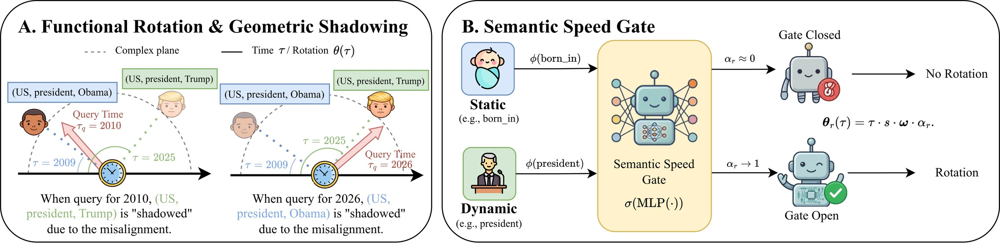
What it shows
On questions that depend on time, RoMem retrieves the right fact far more often than existing memory systems. On memory that never changes, it loses nothing. It works as a module: it can replace the knowledge-graph part of an existing memory system.
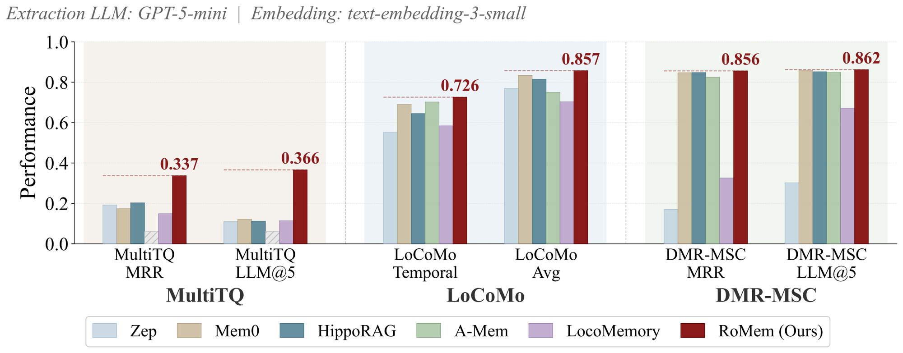
Joint work with collaborators at the University of Edinburgh and Tencent. Published at EMNLP 2026, Budapest.
Cardiac electrophysiology · Industry project
A virtual atrium
Simulating how electrical waves travel through the heart.
The question
In an atrial arrhythmia, the electrical wave that drives each heartbeat takes a wrong path, often around scar tissue. Clinicians map the atrium with a catheter. A simulation built on such a map lets us test ideas about scar and conduction that cannot be tested in a patient.
The work
I did this work at Synvoma Health Tech, where I was responsible for building the solvers. I built a surface model of the heart muscle and used it to simulate how the tissue responds to electrical stimulation.
The project grew in four stages, each one built on the last.
- Reference solverFinite elements. Accurate, but slow.
- Fast solverFinite differences. Quick enough to run many times.
- Tissue propertiesConductivity inferred from measured conduction speed.
- StimulationPremature beats test whether a circulating wave can start.
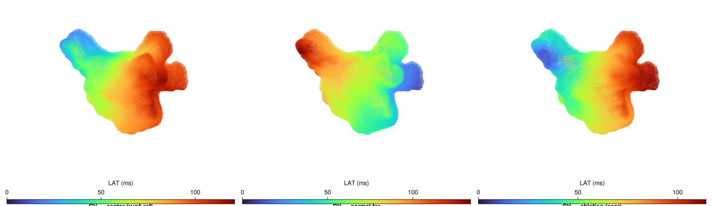
What it shows
With scar regions added to the model, a premature beat can reroute the wave so that it circulates around them. This is the mechanism behind many arrhythmias. The work is a demonstration of mechanism, not a clinical tool.
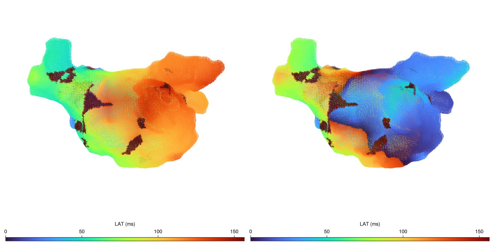
Beyond research
The lighter side.
Research demands rigour. But I do not enjoy an atmosphere that is tense, heavy or over-sensitive. So here are a few things I like. If we share a hobby, or you simply find me interesting, we can be friends. No research purpose required.
Hobbies
I have no great talent for sport, but I play a lot of it: basketball, table tennis, badminton. Basketball most of all. It was very nearly my favourite thing to do in high school. My favourite player is LeBron James, especially in the years after he returned to Cleveland.
Apart from sport and research, I play a lot of video games. With friends, mostly League of Legends, Counter-Strike, Valorant and Overwatch. On my own, the Civilization series takes most of my time. It gives me the feeling of commanding a grand strategy.
Some “odd” facts about me
At about fourteen, I very nearly became a professional League of Legends player. (I am not joking.)
As an undergraduate I was the team leader and coach of the Counter-Strike division of our university e-sports club. I planned the training, drew up the tactics, and found tournaments for the team to play. It was a wonderful experience.
In primary school I was very good at board games: city champion in chess, and city runner-up in Chinese chess. I rarely play now. But I still think that playing face to face over tea, talking, and reviewing the game afterwards is an elegant thing to do, especially in this fast-paced age.